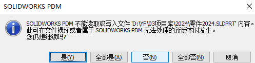

无效指示器
情况1：
该文件在父应用程序中打开，修改后保存。数据卡有一个或多个映射变量。
映射的变量是变量的读/写类型，对于检出的文件，变量可以从数据卡上编辑，保存后，程序更新文档的自定义属性中的属性。但是，如果在其父应用程序中检出并打开该文件，SOLIDWORKS PDM将无法更新文件中的卡片变量。
方法：为了避免这种冲突，如果文件被检出、打开并保存，SOLIDWORKS PDM将限制对数据卡的访问
情况2：
检查加密或文件是否损坏，判断方法可以重新复制问题文件到PDM，你可能会看到如下提示：
